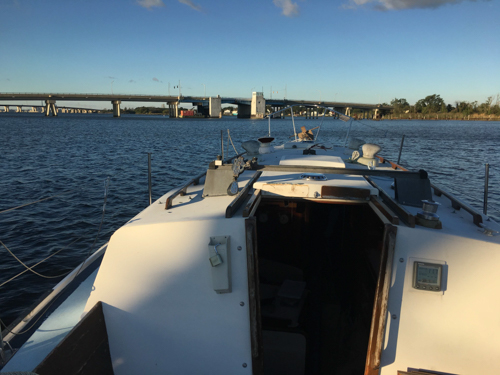
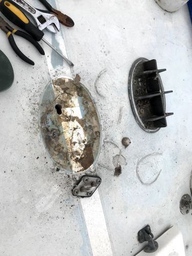
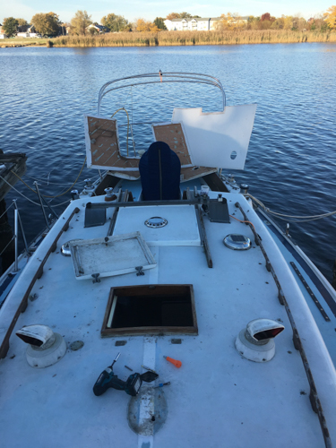
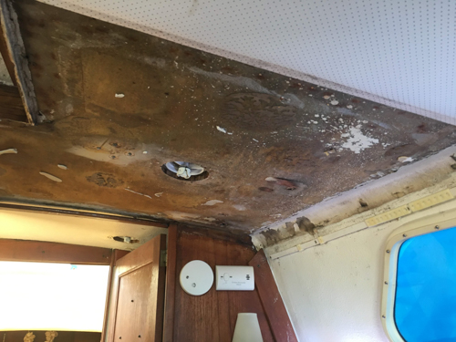
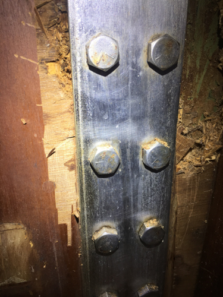
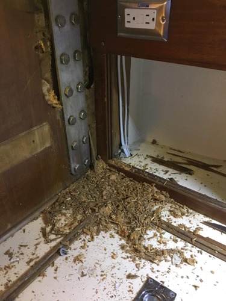

I put it off for a while as I tried to come up with a DIY method for unstepping the mast on Conifer. In the slip next to me is a Dickerson 36, a shoal draft ketch that had belonged to the Annapolis Sailing school in a former life. The mainmast of this ketch is of sufficient height where I could use a halyard and a sling under my spreaders to unstep the mast. The problem is that the angles are all off - I wouldn't be able to get the masthead of the ketch directly over my mast and this would make it very difficult to keep stable.
I decided to bite the bullet and call the marina next door.

- Conifer waiting for the crane
They do a significant amount of work with powerboats and only a small amount of work with sailboats, so unstepping a mast didn't seem like a very common job done there. However, I figured it is better to have a non-sailing crane expert lift the mast than a novice crane operator with lots of sailboat experience. I drove Conifer around to the marina and got ready.
I ran halyards to the base of the shrouds, forestay, and backstay. With tension pulled on the halyards, I pulled the cotter pins from the turnbuckles and loosened them. 10 turns on the outside shrouds, 8 on the inside shrouds, and 3 on the backstay. I'll torque them back to the same tension when I step the mast, although I'll also research how to properly tune the rig then too. I also marked the turnbuckles with a sharpie before loosening them for good measure.
Once the halyards were in place and the turnbuckles loose, we wrapped a strap around the mast and hauled it up with the crane until it cradled the base of the spreaders. With a short jerk upward, the mast pulled free of the step and began to dance around. The forestay, being a stiff roller furler, made this part difficult, as it weighed down the masthead and contributed to the mast pivoting around the spreaders. I had one of the boatyard guys bear hug the bottom of the mast to steady it and then all was under control to back the crane away from the boat.

- Conifer's mast, weighed down by the forestay
I hopped aboard Conifer to take her home, but decided to go for a little joy-ride instead. As the marina owner said, I'd brought in sailboat and left with a powerboat so I should go get her on a plane!
- 
- Notice anything missing?
After my joy-ride (in about 28 kts of breeze and ~5 ft swell), I made a cursory inspection of the mast - all appeared to be in good shape, save for some small rust bits on the shrouds. I'll probably have a rigger come look in the spring for a second opinion.
[gallery ids="25,26,27" type="rectangular" link="none"]
Mast fittings looked clean (I'll need new light and instrument fixtures)
Now that the mast was off, the deck process could continue - removal of deck hardware, core drying for any wet areas, sanding, painting, and re-bedding. After that, I plan to come back to the mast, re-wire, and mount new light fixtures.
- 
- Mast step is off. Lots of yucky silicone and other weird unidentifiable sealants..
- 
- Taking things apart is fun!
Unfortunately, it was someone's bright idea to seal the bottom outside edge of the mast step. This meant that any water that collected in the mast due to rain would build up and drain into the boat through the wiring hole instead of draining out onto the deck between the mast and the mast step. That prompted me to take the liner down from the overhead in the main cabin to search for evidence of the leak.
- 
- Forward liner piece removed (looking forward to stbd). Lots of schmutz hidden behind the liner, but nothing a little sanding won't clean up.
I ended up taking all of the liner down, as I knew there was some major rot just below the mast step where water had been penetrating the deck for years. I wanted to make sure there weren't any other obvious signs of water intrusion.
[gallery ids="34,33" type="rectangular"]
Clear signs of rot. The plywood bulkhead was soft and wet near the edge. Fortunately, the compression post was in perfect condition so I was only concerned with the bulkhead.
I started poking around a bit and following various trails of color change due to water intrusion. I was looking at the starboard chainplate, where I knew I had some leaks that I was going to fix as part of the deck restoration project (but didn't think had caused any serious damage yet), and I punched the bulkhead a bit aggressively with a screwdriver. To my horror, the screwdriver sank into the plywood next to the chainplate. There's a feeling you get when you find rot - it's perverse, really, but it feels like the right thing to do is to pull the screwdriver out, cover the hole, and never look at it again. However, there's this intense curiosity that takes over, and one poke leads to three or four, and soon enough, you discover that almost the entire load-bearing section of your bulkhead is rotten! I mean rotten like crusty breadcrumbs rotten.
- 
- The rotten bulkhead. Starboard Chainplate.
- 
- The breadcrumbs needed little encouragement to pour out of the cavity.
Next up: scope creep. The project expands to include bulkhead replacement.